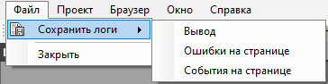
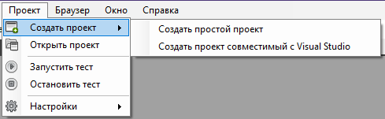
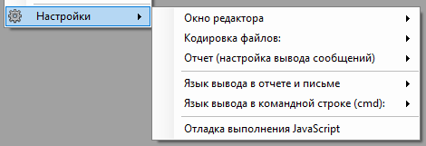
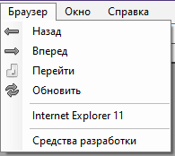
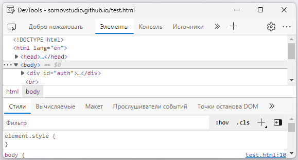
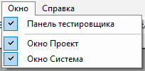
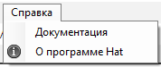

Основное меню
Меню "Файл" - дает возможность сохранить логи в txt файлы.

Меню "Проект" - создание и открытие проектов автотестов, выполнение и остановка автотестов, а так же настройки.


Меню "Браузер" - служит навигацией браузера, а так же позволяет открыть панель разработчика "Средство разработки" и открыть окно Internet Explorer 11

Меню "Окно" - позволяет скрыть или отобразить системные окна браузера.

Меню "Справка" - содержит справочную информацию.

Created with the Personal Edition of HelpNDoc: Easily create Help documents